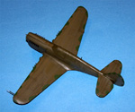
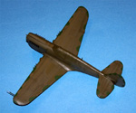
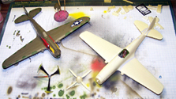

AMT/ERTL Curtiss P-40N
Kit #8798
MSRP $20.25
Images and text Copyright � 2006 by Matt Swan
Developmental Background
The Curtiss P-40 Warhawk was made famous by the American Volunteer Group flying P-40Bs in China against the encroaching Japanese forces. The P-40 was first introduced in 1940 and was already obsolete by European standards; it was slow, overweight and had a poor climb rate. It had been designed more as a low altitude support aircraft with a rugged construction and heavy armor � in this role it did perform well. By 1943 the performance gap was steadily increasing forcing Curtiss Wright Corporation to attempt to fix the aircraft and avoid interrupting the production line by producing a totally new aircraft.
This new P-40 was actually intended to be a P-40P but the desired Packard engines were not available so the 1360 hp Allison V-1710-81 engine (as seen in the M) was substituted resulting in the N. Two of the six .50 caliber wing machine guns were removed and the undercarriage was replaced with a smaller and lighter system. Aluminum radiators and oil coolers were installed and head armor was reintroduced. These weight reduction efforts combined with the current Allison engine resulted in the fastest of the P-40 line. It also exhibited a good climb rate and a service ceiling of 38,000 feet.
The P-40N featured a frameless canopy with improved aft visibility. By time the P-40N entered the fifth production block the two wing guns were replaced bringing it back to six and underwing hard points were installed for bombs and rockets. Three external drop tanks extended the ferry range to about 3100 miles. Various minor modifications to electronics, fuel systems and cameras were seen through the next several production blocks as well as three two seat trainer versions. By late November 1944 the P-40N series ceased production with a total of 13,739 P-40 of all types having been produced. One of the very last units to roll off the production line was converted to wear a bubble canopy and was designated XP-40Q.
The Kit
 This is one of those sets of molds that will most likely live on under many manufacture names. Today we see it under the AMT/ERTL name tag. Arriving in a standard sized lift top box we have four sprues of parts done in a light gray high pressure injection molding that all display finely engraved panel lines, not noticeable flash, minimal mold separation lines and no injection pin markings or sink holes. The overall initial quality of the parts is very good. You may click on the small images to the right to view larger pictures.
This is one of those sets of molds that will most likely live on under many manufacture names. Today we see it under the AMT/ERTL name tag. Arriving in a standard sized lift top box we have four sprues of parts done in a light gray high pressure injection molding that all display finely engraved panel lines, not noticeable flash, minimal mold separation lines and no injection pin markings or sink holes. The overall initial quality of the parts is very good. You may click on the small images to the right to view larger pictures.
The fuselage comes with the engine panels as separate pieces however there is no engine included in the kit. I imagine it would not be difficult to insert an aftermarket product here. The cockpit sidewalls have a good level of detail and so too does the dash. The seat has seatbelts cast in place but they are not well defined and the seat itself is not accurate. The reflector gunsight is a single gray plastic piece requiring the modeler to do some work to achieve a realistic gunsight. We get sixty two pieces in gray plastic here plus a small sprue of four clear parts that cover the canopy in three pieces so it can be modeled open or closed and a single landing light lens. The clear parts show good clarity and well defined raised frame lines � they also fit well to the model.
All the pieces to this kit fit together very well and little or no filler is required. Overall the kit includes sixty six pieces including bomb load and external fuel tank. It appears that this kit is intended to build fifth or eleventh and later production block P-40 with six wing guns. If you want a first through forth or sixth through tenth production block aircraft you�ll need to remove two wing guns.
Decals and Instructions
Instructions for the kit arrive as a single large fold-out. It lacks the customary historical background of the type but does spend a bit of time on some basic model building tips. Following this are nineteen exploded view construction steps that include specific construction tips and color guides scattered throughout the panels. Exterior painting guides are provided for two aircraft with colors given by FS number and color name. Overall the directions are very good and will get you through the build with little difficulty.
We get a single small sheet of decals that allow us to model either �Rosy The Riviter� or �Geronimo�. The sheet includes basic national markings and the most visible of the specific markings for each aircraft but lack any service stencils, warning markings or propeller markings. The color density is good and print registry is good. The decals go down well and respond well to normal setting solutions.
Construction
I actually built my first AMT P-40N about six years ago. I realized that I was totally lacking a P-40 of any sort in my collection (I should be punished) and wanted to build something with teeth. I was not real big on the �Rosy The Riviter� paint scheme rather liking the desert scheme so did a little mix and match for a fictional aircraft. In other words I swapped the nose art from the two examples in the box to satisfy my personal desires.
Construction was very straight forward with no problems at all. I did not need any filler anywhere in the model. I began with the interior using a dark drab green and used no aftermarket items at all (can you believe that? I must not have been feeling well.) One nice thing about the P-40 is you can assemble the fuselage then insert the cockpit afterwards which is exactly what I did. Wings and tail components were glued in place and the cockpit was masked off with damp tissue paper. Some Model Master Primer Gray was used as a basic primer then the under surfaces were done with Testors Neutral Gray. I used Model Master Dark Tan for the upper surface. Landing gear pieces were painted and added along with the bombs and center line drop tank. The model was sealed with Future; decals were applied and treated with Micro Sol. After they had dried down they were sealed with another coat of Future then a basic sludge wash was used for weathering followed by a coat of Polly Scale Clear Flat. Some gun blast stains and exhaust stains were added with ground pastel chalks on a woman�s eyeliner swab.
You may click on the images above to view larger pictures
I set up a quick diorama with a 1940 Ford sedan from Bandai and a few assorted figures from a Preiser figure set and from some assorted Monogram kits. All this is set on some Heki Grass lying across a table top � sure is easy to make a quick display for taking pictures and really can add to your model�s presentation.
Conclusions
You can never have too many P-40 kits and these old AMT kits are definitely worth picking up. The price is good and the fit is great. You can build these right from the box as I have done with this one and have a very presentable model or you can add aftermarket items in the cockpit or engine compartment to dress it up. Speaking of aftermarket, there are simply tons of stuff out there in resin details and optional decal sheets for the P-40 to satisfy virtually any modeler�s desires. I give this kit a great recommendation and would suggest it not only for experienced modelers but for beginners as well � you�ll have fun with this one.
12/30/06
This kit was so much fun that I just had to pick up another one and build it. It did sit around in the stash for a little while but when I discovered a great set of Cutting edge decals that featured a Parrot Head for the N this one hit the workbench with a passion. As with most single engine aircraft I began with the cockpit, nothing special went in here other than a decal salvaged from the Hasegawa P-40K build. I planned on this as an in-flight build right from the beginning so needed a pilot. My figure was found in the spares box and did not need any adjustment to fit the cockpit well. While the pit was drying I went to the fuselage. The kit directs you to assemble the model and install the engine hoods last with the exhaust shrouds in place. I wanted to glue them in place first, paint the model then install the exhausts � a little thought was going to be needed here. I glued the engine covers in place first making sure they mated well then glued the fuselage halves together. Next the pit went in. The seams were trimmed, filled and sanded. Really very little filler was needed here, just a dab of Mr. Surfacer 500 here and there.
Next the fuselage fuel tank is installed then the clear parts are Futured. These are allowed to cure under cover over night then are masked off. Since this is in-flight the cockpit will be closed. While I am building this kit I am also build a Planet Models resin P-40Q. I have this idea to build a whole series of P-40s to cover just about every model made. These tow and numbers four and five in the series. Once the masks are done the clear parts are glued in place with clear parts cement. The sliding cover was spread apart slightly and had to be compressed to close properly. I applied a few fine spots of superglue to hold it in place followed by some accelerator to cure the glue before the curing fumes could penetrate the Future coating and fog the plastic. Now the canopy is airbrushed with Interior Green to establish interior frame color.
Okay, it�s time to do a nose job on this baby. First the exhaust manifolds are airbrushed with Model Master lacquer Burnt Iron. The nose of the model is done with Model Master Olive Drab cut 30% with lacquer thinner. Once this is done I took some additional Olive Drab and lightened it about 10% with white then dusted the centers of each panel to create sun fade. Now the exhaust manifolds are inserted through the wing opening and glued in place. My plan from here is to mask off the nose along some panel lines when I paint the rest of the model.
The wings are installed, the seams are dressed and the landing gear noses are installed. The rest of the landing gear components are placed on masking tape and painted separately. The nose is masked off and the under side of the aircraft is preshaded with flat black then painted neutral gray. The dividing line from upper to lower color is masked off and the upper surface is painted olive drab � no preshading here. The panels are lightened with lightened olive drab paint and the masks are removed.
 The particular scheme I want to use includes those funny little medium green camouflage patterns along the wing leading edge. I trace this pattern onto a strip of masking tape, cut it out with a razor knife and apply it to the wing. Changing my airbrush from the Badger 360 to the Sotar 20/20 I fill in these areas with Model Master medium green and remove the masks. As I said a few minutes ago this is going to be an in-flight build. Not long ago another modeler was so kind as to gift me with a set of Prop Blur photo etched propeller blades and these are just the perfect size for this kit. Unfortunately these pieces are no longer in production and Prop Blur as a company has ceased to exist. I removed the kit blades from the hub, cut slots into the hub for each new blade and super glued them in place. The new propeller was airbrushed with flat black and flat yellow hazed across the tips then treated with some future. The spinner hub was done with olive drab to match the rest of the aircraft.
The particular scheme I want to use includes those funny little medium green camouflage patterns along the wing leading edge. I trace this pattern onto a strip of masking tape, cut it out with a razor knife and apply it to the wing. Changing my airbrush from the Badger 360 to the Sotar 20/20 I fill in these areas with Model Master medium green and remove the masks. As I said a few minutes ago this is going to be an in-flight build. Not long ago another modeler was so kind as to gift me with a set of Prop Blur photo etched propeller blades and these are just the perfect size for this kit. Unfortunately these pieces are no longer in production and Prop Blur as a company has ceased to exist. I removed the kit blades from the hub, cut slots into the hub for each new blade and super glued them in place. The new propeller was airbrushed with flat black and flat yellow hazed across the tips then treated with some future. The spinner hub was done with olive drab to match the rest of the aircraft.
The model has had a day to cure and is now sealed with Future floor polish. The cutting edge decals are applied next. These particular decals seem to be very thick which is nice for their size but makes getting them to snuggle down to the panel lines and compound curves somewhat troublesome. Normally I use Micro-Sol as my preferred setting agent but for these I am shifting to Gunze Mr. Marker Soft, a stronger decals solvent. It takes two applications of setting solution but they do finally snuggle down nicely. I know showing you images of that Q is being a real tease but you�ll have to follow that build under the XP-40Q review. Next the model is sealed once again with Future and allowed to cure overnight.
Normally when I make a sludge wash I use a small amount of acrylic paint combined with a drop of liquid dish soap and two teaspoons of tap water but I have heard of a few modelers having good results using ground pastel chalks in place of the paint so decided to try that approach this time. I shaved a goodly little pile of chalk dust into a mixing cup, added the water and a drop of liquid hand soap and went to work. I was pretty happy with the results; it went into the panel lines nicely, wiped off with a paper towel without difficulty and looked good when complete. The drop tank went in place (I had filled the mounting holes for the bombs earlier as I was not going to use them) and the model was sealed with a coat of Micro-Flat. The masks were removed, the propeller was attached and the aerial was made from invisible thread drawn across a black magic marker and fixed in place with spots of superglue. Insulators were made from superglue and painted white. One thing the AMT kit lacked was the exterior gun sight and pipper. I salvaged a gun sight ring from an old Koster PE set and fashioned a pipper from some scrap PE and glued them in place. Now the model is ready for some pictures.
From the local craft store I had picked up a large roll of light blue paper that I use as a back drop for blue screen photography. I use a trouble light with a reveal flood lamp installed to create my lighting effect and a Kodak 5.1 Easy-share digital camera set for close-up photography. Once the pictures are in the computer I use Photo Adobe and paste the resulting image onto stock cloud images. Overall I have just barely a week involved in this build.
You may click on these small images to view larger pictures


 This is one of those sets of molds that will most likely live on under many manufacture names. Today we see it under the AMT/ERTL name tag. Arriving in a standard sized lift top box we have four sprues of parts done in a light gray high pressure injection molding that all display finely engraved panel lines, not noticeable flash, minimal mold separation lines and no injection pin markings or sink holes. The overall initial quality of the parts is very good. You may click on the small images to the right to view larger pictures.
This is one of those sets of molds that will most likely live on under many manufacture names. Today we see it under the AMT/ERTL name tag. Arriving in a standard sized lift top box we have four sprues of parts done in a light gray high pressure injection molding that all display finely engraved panel lines, not noticeable flash, minimal mold separation lines and no injection pin markings or sink holes. The overall initial quality of the parts is very good. You may click on the small images to the right to view larger pictures.

{kind=link}
{kind=link}
{kind=link}
{kind=link}
{kind=link}
{kind=link}
{kind=link}
{kind=link}
{kind=link}
{kind=link}
{kind=link}
{kind=link}
{kind=link}
{kind=link}